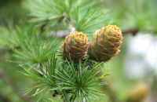
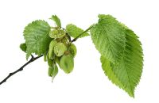
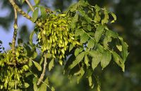
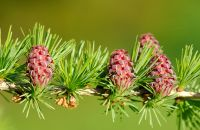
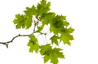
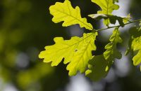
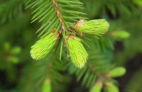

The symbolism of trees
Just as gemstones are said to have certain properties and effects, trees and plants are also associated with certain characteristics and meanings. We took a look around and listed some of our most famous local trees with their supposed characteristics.
We would of course be interested in whether you agree with said properties or whether you might perceive the plants in a completely different way. We hope you enjoy reading and discovering.
| Tree | Picture | symbolism |
|---|---|---|
| Walnut | Hard nut, hard wood; serves as a demarcation and is often planted on the edge of the property; your own demarcation from the outside strengthens your own path. | |
| Chestnut | Spreads cheerfulness, joy and sociability, and is often found in beer gardens; it has deep roots and favors stressed people to concentrate. | |
| Pine |  | Symbolizes endurance and longevity; the resin and needles are a well-known remedy; supports the work on self-esteem |
| Elm |  | brings more movement and communication into life; enhances creativity and dynamism as a solution to stagnation; mediator |
| Linden | radiates soothing harmony; the linden tree soothes and heals wounds; it reconciles and favors growth and change; Linden trees can often be found in the center of the village or near old houses | |
| Ash |  | in Norse mythology the world tree; stands for change, transformation; Creator of own life; Development of the soul potential |
| Larch |  | delicate and robust, a survivor; Message of basic trust in one's own goals; go his way without stubbornness |
| Birch | symbolizes the beauty inside and outside and the trust in our emotional life; act spontaneously from the gut | |
| Maple |  | freed from fear; Balance and inner peace; Bridge to higher spheres; Overcoming vulnerability |
| Beech | stands for eternity; good for mind people who have lost sight of their goal; relieves mental tension | |
| Oak |  | strengthens free will and own decisions, as well as intuition and the connection to the soul |
| Fir |  | shows love in the higher sense; supports people with a hard shell and a soft core; promotes emotional maturity |